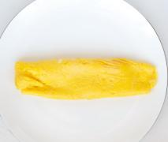

Ingredientes
- 2 huevos
- Una pizca de sal
- 1 cucharadita de aceite de oliva
Pasos de realización
- Romper los huevos en un bol.
- Batir los huevos y añadir una pizca de sal.
- Calentar una sartén con un poco de aceite.
- Verter los huevos batidos en la sartén.
- Cocinar hasta que el huevo empiece a cuajar.
- Doblar la tortilla por la mitad y cocinar unos segundos más.
- Servir y ya estaría listo